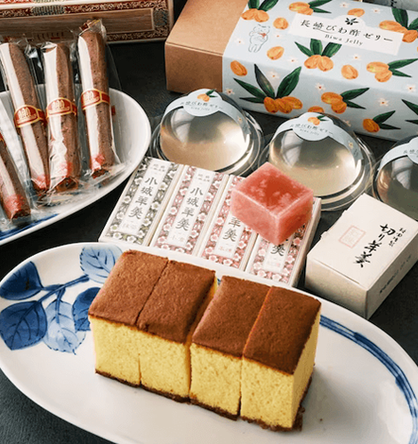
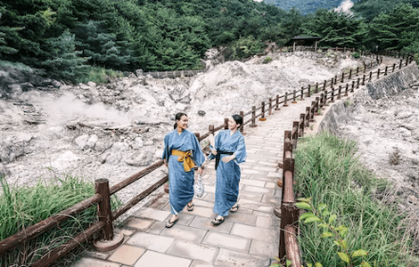

NATIONAL GEOGRAPHIC

A rail adventure in Kyushu onsen, homestays and sweet treats along Japan's Sugar Road
TRAVEL
- 
- 
The shoji screen door slides closed behind me. The room is sun-dappled paper door and latticework walls letting light in while keeping prying eyes out. My shoes have been spirited away and the tatami floor is cool underfoot, its summer-hay scent hanging in the air. The rush grass used for the flooring, I’m told, comes from neighbouring Kumamoto Prefecture. The latticework carpentry forming the walls and arched ceilings are Okawa Kumiko style, originating in Fukuoka, which is where I currently find myself. Although not for much longer. At the blow of a whistle, this room will soon be on the move. The delicate confection of paper, wood and grass is, in fact, inside a train.
A white-gloved guard gives the signal, and we’re off. All aboard the 36+3, a luxury black-and-gold-trim train inaugurated by the Kyushu Railway Company in 2020. Operating on five routes around Kyushu, it’s the vision of Eiji Mitooka, the industrial designer responsible for a host of heritage trains that crisscross Japan’s third-largest island on sightseeing itineraries. Subtropical at its southern reaches, Kyushu is the southernmost of the country’s four main islands, almost closer to South Korea and Shanghai than Tokyo. Until 2004, when they became stops on the Shinkansen bullet train network, Kyushu’s ports and airports were better connected to Taiwan and mainland Asia than much of Japan. And it wasn’t until 2022 that the bullet train started operating in Kyushu’s far-western reaches.
Sugar Road stories
Kyushu has a long history of sending sweet stuff east. In the early 16th century, the Portuguese introduced sugar to Japan via the island’s southwestern port of Nagasaki. Hizen Hamashuku is one of 25 staging-post towns along the Nagasaki Kaido, or Sugar Road, that winds 141 miles from Nagasaki through central Kyushu to the island’s northernmost city of Kitakyushu. As sugar found its way east to the rest of Japan, ryokan guesthouses, breweries and confectioners grew up along the route. “During the isolation era, Nagasaki was the one Japanese port open to foreign trade,” says Kay-san. “Kyushu was Japan’s only contact with the outside world lots of things came and went along this route,” she says with a wry smile.
The ruling Tokugawa shogunate of the 17th century closed the nation’s borders to stem the rising tide of Christianity, but during the two centuries of isolation that followed, foreign customs, courtesans and all manner of sweet things still found passage along the Sugar Road. Had I stood here in the 1800s, my fellow travellers may well have included camels and elephants exotic imports making their way to Edo (modern-day Tokyo) for the shoguns’ pleasure. In the nearby town of Ogi, I try yokan, a jelly-like sweet made with azuki bean paste in jewel-like ruby and jade colours. “If you go to any house in Kyushu, you’ll be offered one of these,” says Kay san. “We’ve been eating them to this recipe for hundreds of years.”
My bed for the night also feels like it’s from a bygone era. I leave the train at the hot springs town of Takeo Onsen and head for the hills. Following the Oniki rice fields as they step up to meet the mountains, I find Oniwa homestay. With its wood and wattle-and-daub walls, it’s an almost sepia-tinged scene. My host, Yukono Takuma, greets me, dressed in an old-fashioned headscarf and pinafore. After we kick off our shoes, Takuma shows me into the kitchen, past a traditional Japanese kamado clay oven and into a lounge where screen doors open onto a stage-like deck jutting over the rice terraces. It’s a theatrical reveal that produces an open-mouthed “wow” from me that needs no translation for my non-English-speaking host.
“The house isn’t entirely old,” says Takuma, as we piece a conversation together using phone translation apps. “Parts of it are. We’ve added reclaimed pieces. It took two years to finish.” It’s a triumph of artful yet deeply rustic design. I sink into a basket chair on the deck, a misty pre-twilight bringing utter stillness to the terraces patchworked steeply down the narrow valley, densely forested mountains seeming to gather as they darken above. It’s a mesmerising dose of satoyama the Japanese term for a transitional space between the man-made and the wild. The universal sound of kids being called for dinner finally brings me round.
To Hell and back
A vision of Hell, quite literally, greets me in Unzen. The hill town, centred around an active volcano in Kyushu’s Shimabara area, is home to the Unzen Jigoku sulphur springs (jigoku translates as ‘hell’). Steaming fumaroles punctuate the ground at every turn, an inferno softened by the lush mountains of surrounding Unzen Amakusa National Park. Founded in 1934, Japan’s first national park was created as Unzen grew into a summer retreat from coastal humidity. Today, Unzen Jigoku’s iron-rich waters feed a modest number of spa hotels, including Kai Unzen, where guest-room balconies have private baths overlooking the broiling heart of the springs. Kai’s communal onsen customarily male-female segregated hosts multiple indoor-outdoor pools, including some with grey, unfiltered water, which, once the obligatory pre-onsen scrub and shower is done, I approach tentatively. “Don’t stay in too long,” cautions the attendant. “More than 10 minutes can be too harsh on the skin.”
Kyushu is home to Japan’s largest concentration of hot springs testament to the fact onsen bathing is still very much woven into local culture. And this one is powerfully hot stuff. Once in a post-bath stupor, the onsen hotel custom of wearing house pyjamas to dinner, taken in private booths, seems entirely sensible. My meal of shippoku small plates and a shabu-shabu hot pot becomes a long, lazy indulgence. But the extravagant feast, all artfully presented on Saga ceramics, ultimately defeats me. The little castella sponge cake (a Sugar Road dessert of Portuguese origin) I find later in my room, left as a gift, has to wait.
Comments :
- john Very good
- john Very good
Leave a Reply
Your email address will not be published. Required fields are marked*
Related posts:
-
 COVID-19 can ruin your sleep in many different ways—here's why
COVID-19 can ruin your sleep in many different ways—here's whySix weeks after a mild case of COVID-19 early in the pandemic, Erika Thornes started waking up every night between 2 and 3 a.m. Unable to fall back asleep, she would listen to podcasts, read, and scroll through Twitter
View article -
 Now we know how COVID attacks your heart
Now we know how COVID attacks your heartScientists have noticed that COVID-19 can trigger serious cardiovascular problems, especially among older people who have a buildup of fatty material in their blood vessels. But now a new study has revealed
View article -
 What causes long COVID The answer might be in your gut
What causes long COVID The answer might be in your gutNearly one in five people who have had COVID-19 in the United States continue to suffer from symptoms of long COVID. But why some people recover completely while others remain sick has been a mystery.
View article